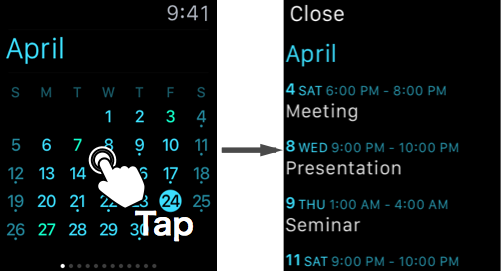

You can see the monthly calendar with the Today widget or Apple Watch.
Coyomi iPhone app is for settings, there is no function to show the monthly calendars.
Today Widget is the content of the Today tab in the notification center.
Tap the date in the widget to open Apple's "Calendar" app.
Tap "Show more" to display the button for switch previous month or next month.
You can see the calendar for the past 2 months, the future 10 months.
Tap the screen to show a list of events.
